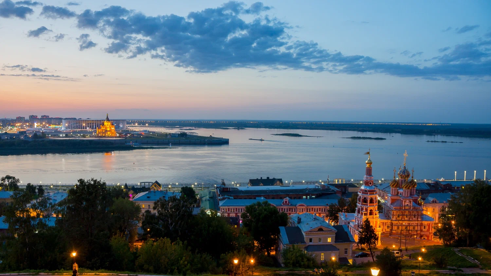
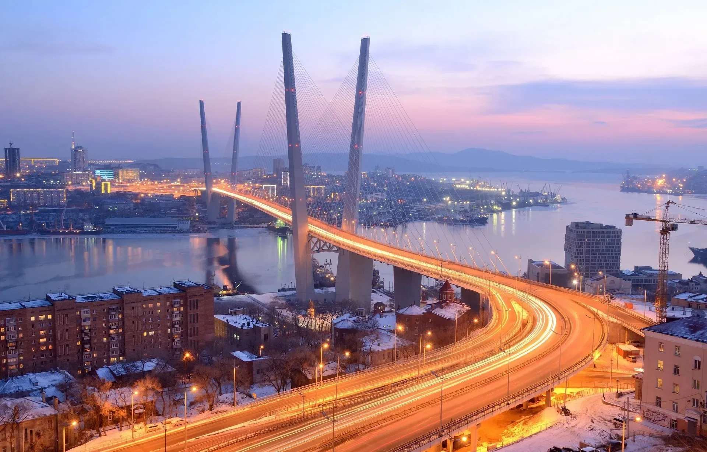
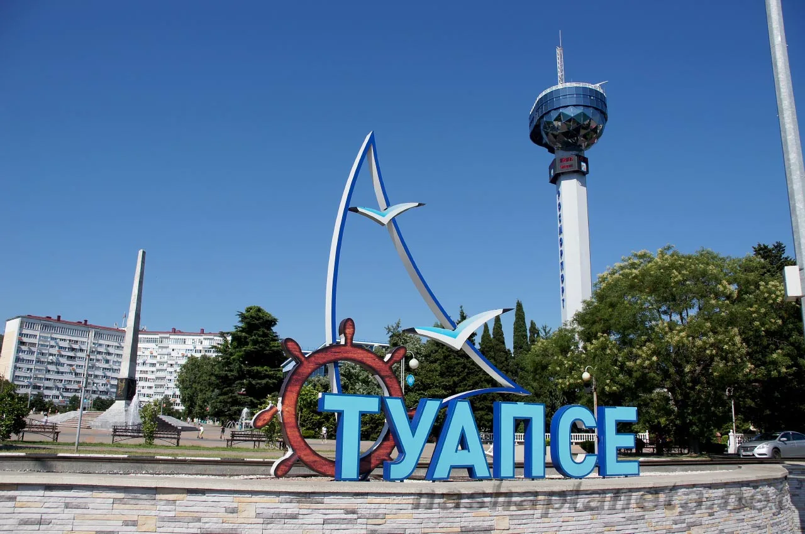
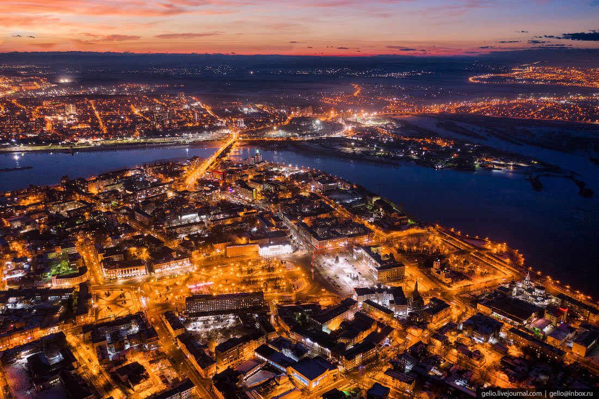

Москва — столица России, город федерального значения. Это культурно-исторический, экономический и
политический центр страны. На его территории размещаются органы государственной власти РФ.
Москва — крупнейший по численности населения город России: здесь живут 13,1 млн человек (2023 г.),
что составляет около 8,6% населения страны.
Москва расположена в центре Восточно-Европейской равнины, в междуречье Оки и Волги.
Как субъект федерации, Москва граничит с Московской и Калужской областями.
Москва — популярный туристический центр.
Санкт-Петербург — второй по численности населения город России. Город федерального значения,
административный центр Северо-Западного федерального округа.
Расположен на северо-западе страны на побережье Финского залива и в устье реки Невы.
Граничит с Ленинградской областью, также имеет морские границы с Финляндией и Эстонией.
Основан 16 (27) мая 1703 года царём Петром I. В 1714–1728 и 1732–1918 годах являлся столицей
Российского государства.
Нижний Новгород — город в центральной России, административный центр Приволжского федерального
округа и Нижегородской области. Второй по численности населения город в Приволжском федеральном
округе и на реке
Волге, седьмой по численности населения город в стране.
Расположен в центре Восточно-Европейской равнины, на месте слияния Оки и Волги. Ока делит город на
две части: на высоком правом берегу расположена нагорная на Дятловых горах, и заречная — на её
левом низинном берегу.
В период с 1932 по 1990 год город носил название Горький (в честь писателя Максима Горького).

Владивосток
Владивосток — крупный город и порт на юге Дальнего Востока России. Политический, культурный,
научно-образовательный и экономический центр региона.
Административный центр Приморского края, Владивостокского городского округа, а также с 13 декабря
2018 года центр Дальневосточного федерального округа.
Расположен на полуострове Муравьёва-Амурского, городу подчинены 5 сельских
населённых пунктов и острова в заливе Петра Великого Японского моря.

Туапсе
Туапсе — город в Краснодарском крае Российской Федерации. Крупный порт на побережье Черного моря.
Административный центр Туапсинского муниципального района. Город краевого подчинения.
Расположен на восточном побережье Чёрного моря, в междуречье рек Туапсе и Паук, у подножья южного
склона Главного Кавказского хребта. Находится в 105 км к югу от города Краснодар и в 78 км к северо-западу
от центра Сочи.
Население по данным на 2023 год — 60 707 человек.
Название города происходит от одноимённой реки, гидроним имеет адыгское происхождение, где туа — «два»,
псы — «вода, река».

Иркутск
Иркутск — город в России, административный центр Иркутской области. Расположен в Восточной Сибири, на
берегах реки Ангары, при впадении в неё реки Иркут, в 66 км от Байкала.
Население города — 606 369 (2024) человек; это шестой по численности населения город Сибири и двадцать
пятый по численности населения город России.
Иркутск — крупный научно-образовательный центр, в котором обучается свыше ста тысяч студентов. Среди
отраслей промышленности: авиастроение, гидроэнергетика
и производство продуктов питания. Транспортный узел на Транссибирской железнодорожной магистрали и
федеральных автомагистралях «Байкал» и «Сибирь».
Иркутск основан как острог в 1661 году.

Выполнила студентка группы ИСПб-023,
Картунова Виолетта